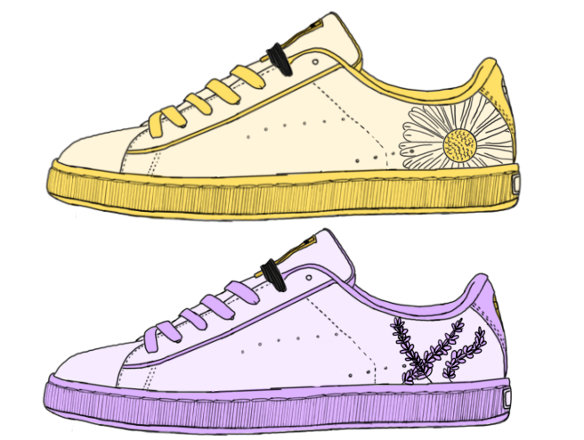
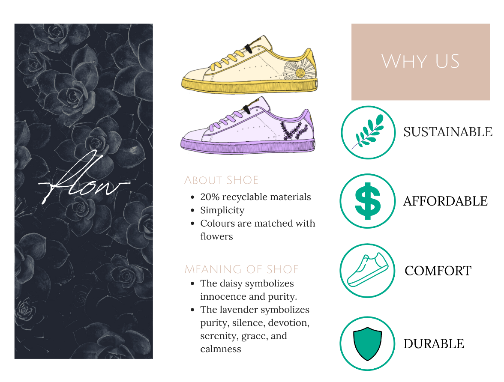

BUSINESS STUDIES / INDIVIDUAL COURSEWORK / 2021
Flow
From consumer feedback to a floral footwear concept, positioning and promotional material.

My contribution
I completed this individual Principles of Marketing assignment during my Business Management diploma. My work connected consumer survey analysis, market segmentation, product positioning, a brand-name rationale and proposed pricing with a footwear concept, brochure and sample social-media promotion.
The problem
How could consumer feedback about an existing footwear product inform a more distinctive concept and marketing proposal? The project needed to connect a product idea with reasons someone might choose it.
The constraint
This was an individual academic proposal. The research used an exploratory sample of 32 respondents, and the deliverable included a digital promotional mock-up. The sample was not established as representative of the wider market, and there was no manufactured prototype to test.
What the research showed
In one survey question, 56.3% selected quality and style as an improvement area, while 31.3% selected more colour. A separate question found that 26 of 32 respondents (81.3%) selected design and style as an improvement that could motivate a purchase.
These findings guided the proposal. They are preferences within this small sample, rather than evidence of market-wide demand or sales.
From findings to a concept
I used visible floral imagery and two colourways—daisy/yellow and lavender/purple—to respond to the interest in style and colour. I connected those choices to the Flow name, a target-market rationale and promotional messaging.

The outcome
A completed marketing proposal with survey analysis, positioning, two footwear colourways, a brochure and sample social-media copy. This shows how I connect business research with a visual concept and communication. Flow was not commercially launched.
What I would test next
The next step would be to compare reactions to the two concepts with a defined target group, test whether the brochure communicates the intended value, and validate product-benefit claims before using them commercially. Those tests were not part of the evidence available for this assignment.
Context and credits
Individual coursework by Celeste Tong, Nanyang Polytechnic, 2021. The images are extracts from the original submission. Underlying shoe templates and any third-party visual elements remain credited to their owners; this is not a Puma or BTS commission or endorsement.